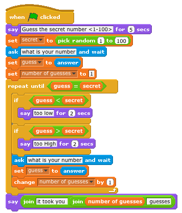

James Madison University, Spring 2014 Semester
Lab02A: I/O, variables, operators
Background
This final Scratch lab will introduce more advanced programming constructs that allow you to manipulate numbers and text. We will also explore several ideas and techniques for your self-directed programming assignment due later this week.
Objectives
Understand the process of asking for input and displaying output.
Be able to describe what a variable is and why variables are useful.
Become familiar with arithmetic operators and string concatenation.
Key Terms
- I/O
- input/output, or the communication between a program and its user
- Variable
- a descriptive name associated with a value or storage location
- Operator
- a symbol that represents a common arithmetic or logic function
Submission
-
Download the
 Lab02A.txt worksheet and open/edit the file as plain text.
Lab02A.txt worksheet and open/edit the file as plain text. -
Submit your completed worksheet via
 canvas.jmu.edu by the end of the day.
canvas.jmu.edu by the end of the day.
References
This lab is adapted from the Scratch Curriculum Guide v20110923, released under the Creative Commons Attribution-ShareAlike license.
Part 1: Basic Conversion
As we transition to Java later this week, several of the example programs we will do involve converting values of one format into another. The purpose of this exercise is to write a small "conversion" program in Scratch.
Step 1. Begin with an empty Scratch project and click on the "Sensing" palette. Drag an "ask" block onto the scripts area. Click on the script and answer the question that the cat asks you.
- Where does the answer get stored? What happens when you click it?
- What happens when you click the check box next to the answer?
Step 2. Now click the "Looks" palette and snap a "say" block under the "ask" block.
- How can you get the sprite to say the answer from Step 1?
- How can you make the message disappear after four seconds?
Step 3. Find the "join" block on the "Operators" palette.
- How can you get the sprite to say "Hello, _____" using your answer? (There should be a space between the comma and the answer value.)
- How can you output "I think _____ is cool!" using your answer?
Have you discovered the "Tips" menu? You may want to refer to the "How To" and "Blocks" reference pages linked from that sidebar.
Step 4. Variables allow you to save values for use in blocks with rounded or rectangular holes (which correspond to numbers and text, respectively).
- How do you ask the user for their first and last name separately?
- How can you display them back to the user in reverse order?
Step 5. Write a script that asks the user for a number of inches, converts that value into centimeters (1 in = 2.54 cm), and displays the result.
- How do you perform multiplication in Scratch?
- Raise your hand when finished and demonstrate your script to the instructor.
Part 2: Squares & Circles
Step 6.
You have been hired to design a new marketing campaign for JMU sports. The
coaches would like something with gold squares and purple circles. Refer to
the  Shapes handout
for ideas. And try to incorporate the
Duke Dog
into your project somehow.
Shapes handout
for ideas. And try to incorporate the
Duke Dog
into your project somehow.
- Spend at least 15 minutes designing a project you can show to the class.
- Raise your hand when finished and demonstrate your work to the instructor.
- Write a short description of your project below (2-3 complete sentences).
Part 3: Automatic Drawing
Step 7.
In Scratch, each sprite has a "pen" it can draw with as it moves around the
stage (see the "Pen" palette). This idea is known as
turtle graphics and
enables you to program your own drawings. For a completely random example, see
the  Drawing handout.
Figure out how to draw something simple, like a geometric shape or repeating pattern.
Drawing handout.
Figure out how to draw something simple, like a geometric shape or repeating pattern.
- Spend at least 15 minutes designing a project you can show to the class.
- Raise your hand when finished and demonstrate your work to the instructor.
- Write a short description of your project below (2-3 complete sentences).
Again, you should check out the "Tips" menu -- particularly the one about the pen blocks.